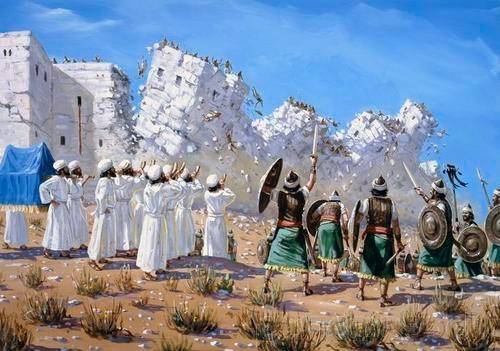
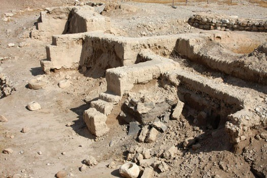
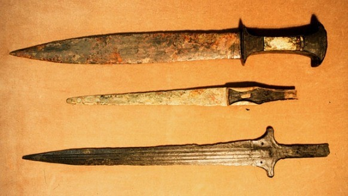

Introduction
As the story in Exodus is told, the Israelites stumbled upon the land of Canaan after being subjected to nearly 400 years of bondage, and after wandering the desert for another 40 years. The Hebrew Bible explains how the Israelites were divided into 12 tribes. Nearly all of which had their own territory according to the etiological story. These tribes were either a member of the upper or lower kingdoms and were referred to as the kingdom of Judah and the Kingdom of Israel. This is how the Bible explains the Israelite’s settlement and how they came to settle in the land of Canaan. However, it is more Likely that the stories of exodus and their conquests over the Canaanites were simply a series of etiological tales, explaining how the Israelites came to inhabit the land of Canaan. In this presentation I pit the Bible against historical evidence, and try to use the bible as an ideological resource, not a historical account. Instead of taking what the bible says literally I try to answer questions such as, what pedagogical role does this story serve? And how is it meant to impact the reader’s view of history? Why did the Israelites write these extensive tales of conquest if they never took place? Where did this need to distance themselves from the Canaanites spawn from? etc…Throughout this investigation I will be relying primarily on biblical texts as well as incorporating secondary sources to question the historicity of the biblical war narratives. I will also give a more persuasive historical account of how the Israelites came to settle in Canaan, and how their conflicts were dealt with.
Divine Right
One can see how deeply rooted warfare is in the history of the ancient Israelites in the Hebrew Bible, when at the first sight of habitable land the Israelites responded with the following. “Every one of your fighting men shall go across armed in the van of your kinsmen. And you shall assist them until the Lord has given your kinsmen a haven, such as you have, and they too have gained possession of the land that the Lord your God has assigned to them” (Joshua 1:14). According to the Hebrew Bible, from the very beginning the Israelites had to fight for their right to land. For the Israelites the days of wandering were too fresh and they had two choices, attack or be doomed to what they thought would be a nomadic existence forever. This is how the Hebrew Bible rationalizes the attacks. Later I will propose that both of these are far from the more likely historical events that took place.
Origins of Battle and the Conquest Jericho

The Battle of Jericho is the first and arguably most notable of all the battles of the ancient Israelites described in the Bible. The story describes the desert-wandering Israelites sending every able-bodied man into battle without notice, to bring down the walls of Jericho and settle. It is difficult to see the motivation behind this aggression without understanding the theology which they had been living under. In the book of Joshua God states “Be strong and resolute, for you shall apportion to this people the land that I swore to their fathers to assign to them.” (Joshua 1:6). This quote shows that the Israelites were motivated by (at least what they thought was) divine right. God had promised this land to them (thus why it is called the promise-land) so once the time seemed opportune, they seized the land and brought down the walls of Jericho.
The Israelites were not primitive in their tactics, they were quite deliberate and strategic according to the ancient scripture. As seen in Joshua 2 spies were sent out to reconnoiter the fortifications of Jericho and to see the general state of the society. The Israelites used scare tactics such as ram horns and battle cries to scare the enemy. Although it is unclear, the Hebrew scripture states that they marched around the city seven times before their attack. This was most likely a ritual of always doing things in seven. Which is common and shows how theology became integrated into warfare. The theme of seven is most easily seen in god creating the world in 6 days and resting on the seventh, making seven a sacred number.
The Israelites were quite ruthless in their mindset for war, Joshua 6:21 states that they killed every man and woman and even the animals such as oxen, sheep and asses within. An interesting insight is that there is no reference to what was done with the children.
Validating the Historicity

Evidence exists in the Bible and archaeology that suggest the Israelites feared the people in the low-lands because of their iron chariots and therefore remained in the high-lands away from conflict. It should be said that the biblical account of the story is far from a historical account. Essentially this means because of the lack of archaeological evidence of the enslavement in Egypt and their glorified military campaigns, we are unable to validate these theologically driven stories and must only treat them as such, and not as historical events. Archaeologists were able to date ceramics from the ruins of Jericho, and measure the seismic activity which they claim could have occurred no earlier than 1400 BCE. The battle took place around the early iron age or later bronze age which means the sophistication of weapons at the time was quite significant. The dating of the event is unclear but if the invasion did take place it would be dated around 1250-1350BCE (Boling (1982):85), which is roughly when the Israelites came to settle in Canaan. Archaeological excavations show that Jericho was well fortified, and that the walls in fact did fall as suggested in Joshua 6:20 (tricky issue, cf. Kuijt, Ian (2012). The Oxford Companion to Archaeology). There are many theories that Archaeologists find more persuasive than the Hebrew Narrative in terms of historical accuracy. Gerhard Von Rad analyzes these problems in his book Holy War in Ancient Israel and finds that there is persuasive archaeological evidence that the conquest of Jericho took place around 15th century BCE, supposedly before the Israelites’ arrived in the Land of Canaan. To be clear these dates are all speculative and although it is unlikely that the Israelite conquest of Jericho occurred prior to 15th century BCE we are unable to rule it out entirely as a possibility. As an alternative, Von Rad suggests that there was an Egyptian military campaign during roughly the same time period which many historians find more persuasive. The story of nomadic Israelites bringing down the great walls of Jericho seems like an interesting narrative of conquest, but without tangible evidence it is hard to believe. With this understanding, we must ask ourselves what is the purpose of these stories if they never took place?
Technology and Weapons in Warfare

The Hebrew bible helps us to not only understand the ancient Israelite ideology, but also gives us glimpses into the reality of warfare, and their fears of engaging the Canaanites. It is difficult to date the battles of the bible because of the lack of evidence. Therefore we can only rely on what the bible has to say, and the weaponry that would have been prominent given the time period and location, which is also unclear. The Hebrew bible gives us hints as to the type of weapons used at the time in its mention of certain materials. In Joshua 6:24 there is reference to the seizure of iron gold silver and copper. The reference to gold, silver, and copper does not tell us much; however, the fact that iron existed helps us to date the event at around 1200BC or later, reinforcing the improbability of the Israelite conquest of Jericho due to the research presented above. This also provides insight into the type of weapons used for warfare.
At this time iron swords would not have been utilized in battle because these were difficult to make. Iron swords would not become prominent for several hundred years after the speculated date of attack. Iron chariot warfare would have been likely given the time period and location. As I will discuss in the next paragraph, historically the Israelites did not often engage in battle and we can even see how they were confined to the highlands and were fearful of the Canaanites “because they had Iron Chariots” (Judges 1:19). Their weapons would have most likely been primitive which is why they rarely engaged the Canaanites. Staying away from major conflicts and the pastoral nature of the people made weapons unnecessary.
Conversely if we simply look at this story as a theologically driven narrative written many years after its intended time period, then the fact iron existed was simply a matter of illustration and speculation of a later generation on the past. And therefore holds no conclusive insight and can be disregarded altogether.
Settlement in Small Clans Vs. Unified Israel
There is great controversy surrounding the idea of how the Israelites came to arrive in Canaan and settle, or whether they arrived at all. The Hebrew bible presents this idea that a unified Israel invaded the land of Canaan and conquered it as one unified people, then diplomatically divided it among the leaders of the tribes. As Irving Zeitlin discusses, the Israelites most likely did not enter Canaan as one big camp but rather in small clans. The overwhelming lack of evidence to show that the Israelites conquered this massive expanse of land suggests that Irving Zeitlin’s theory of a subtle assimilation into the land of Canaan to be persuasive. Zeitlin describes the conflicts the clans of Israel faced, not as wars of biblical proportions, but rather as little “skirmishes” that the clans stumble upon during their process of assimilation and most likely failed (Zeitlin (1984); 107). Historically speaking the conquest of an already great empire by a collection of nomadic peoples ( Nomadic from the biblical perspective ) is unlikely to say the least. What is more likely is that the 12 tribes of Israel we know today was an etiological way of explaining the Israelites eponymous ancestors and how they acquired their names. E.g. Tribe of Levi, and Tribe of Cohen commonly seen in people of jewish descent today.
Contradictions Present in the Book of Judges
A great number of contradictions are presented in the book of Judges which seems to present a completely different account of how the Israelites came to settle in Canaan. In the very first verse of the very first chapter we find a fascinating insight. It reads “After the death of Joshua, the Israelites inquired of the LORD, “Which of us shall be the first to go up against the Canaanites and attack them?” (Judges 1:1). This clearly implies that in the lifetime of Joshua there was no war waged upon the Canaanites. (Judges 1:21) is a prime example of a contradiction, stating that the Israelites failed in their attempt to dispossess the inhabitants of Jerusalem (Jebusites). (Judges 3:5) is another example of contradiction but also shows how the Israelites dwelt among the Jebusites and did not conquer them, giving strength to the argument of assimilation.
Theological Motivation for Constructing False War Stories
The Question arises, if the Battles and the conquest did not take place, why are there so many stories documenting the slaughter of the Canaanites instead of the more peaceful reality? The Israelites did not see themselves as Canaanites, and it is repeatedly stated that they are to separate themselves from those people. It is almost as if they created these stories to show how different they are, that they would ruthlessly slaughter them without a second thought. Harvard Professor Shaye Cohen describes that this hate and need to separate themselves from the Canaanites spawns from the deep-seated knowledge that they are closely related to, and quite possibly could be Canaanites. After all the Canaanites and the Israelites share the same father (Abraham) and are closely linked in theology, but do not want to be identified as such. The link is very easy to see, Isaac’s half brother Ishmael is the father of Canaanite nations and Isaac’s first born son Esau is the father of the Edomites, which are a Canaanite people. Historically it is fascinating how after these events the authors of the bible were theologically driven to separate themselves from the Canaanites because of their differences, and construct elaborate stories of slaughter to show how different they are, when in actuality they are very similar.
Non-Combative Nature of Settlement
The Israelites were most likely pastoral peoples, and inhabited the less fertile highlands and did not confront the Canaanites in combat (at least not enough of a confrontation that could be discovered through archaeological excavation). Without the origins from the book of exodus it is persuasive that the division of these people came from some sort of revolt. We know that most Israelites settled in the highlands and did fear the low-landers because of there more sophisticated weaponry. As Robert G. Boling points out there is evidence of settlements which are distinctive through the fact that there are no pig bones (distinctive of the Israelites). This provides a whole new vantage point for the origin of the Israelites into the land of Canaan and the lack of land they acquired through aggression. This is clearly the opposite of how some authors of the scripture intended for them to be perceived historically.
Conclusion
The Settlement and conflict of the Israelites into the land of Canaan is an ambiguous topic debated passionately to this day. As one can see above there are many ways to analyze the history of the Israelites. A topic like warfare in ancient Israel is a perfect example of why the study of the ancient past is so difficult. As my research progressed into the subject I was amazed at how little we actually know, and how much the history as we know it depends on speculation, and arguably un-reliable sources. Which serve a more theological purpose than a historical purpose. Using the bible as a historical source was able to give me a great insight into the ideology of the Israelites, and per-haps the warfare they utilized. However it is more likely to give us etiological stories that favored the Israelites and perhaps credit them with battles that are historically inaccurate. The validity of these battles and the Israelite settlement has huge implications on the religious population as well as the students of history. The validation or invalidation of these events changes the way people view themselves, their origin and the history from which they came. The intellectual curiosity that per-sists is really quite amazing, even when debating and studying stories from nearly 3000 years ago we seem to be stubbornly unaccepting of ambiguous events with no clear origin.
Bibliography
Boling, Robert G. "The Decline and Fall of Civilization." Joshua. Garden City, NY: Doubleday, 1982. 33-85. Print.
Rad, Gerhard Von, and Marva J. Dawn. "Holy War in the History of Ancient Israel." Holy War in Ancient Israel. Grand Rapids, MI: W.B. Eerdmans Pub., 1991. N. pag. Print.
The Hebrew Bible: Book of Joshua, Book of Judges
Wilford, John Noble. "Believers Score in Battle Over the Battle of Jericho." The New York Times. The New York Times, 21 Feb. 1990. Web. 18 Oct. 2015.
Zeitlin, Irving M. "The Israelites in Canaan: Infiltration or Conquest." Ancient Judaism: Biblical Criticism from Max Weber to the Present. Cambridge: Polity, 1984. N. pag. Print.
Images:
Digital image. Jewishvirtuallibrary. N.p., 2008. Web. 21 Nov. 2015.
Digital image. Goodsalt. N.p., 2015. Web. 21 Nov. 2015
Digital image. Bbc.com. N.p., n.d. Web. 21 Nov. 2015.
Digital image. Bible-archaeology. N.p., n.d. Web. 21 Nov. 2015.
Digital image. Cbmidwest.org. N.p., 21 Mar. 2011. Web. 21 Nov. 2015.
Digital image. Israel-a-history-of. N.p., n.d. Web. 21 Nov. 2015.
Digital image. Thcolorofworlds. N.p., 7 Dec. 2014. Web. 21 Nov. 2015.
Expanation
What initially sparked my interest in the subject was the class I am currently taking on the Hebrew bible. We read and analyzed the story of exodus and how they stumbled upon the land of Canaan. I found the stories of Battle from the book of Joshua a little unsatisfying and felt that there must have been more to the conflicts and the story of how they came to occupy the land of Canaan. I wanted to analyze primary and secondary sources as well as archaeological evidence to validate or invalidate the ancient scripture while providing a background of how the Israelites wanted their his-tory of warfare to be perceived by future generations. The real interest came from trying to answer the question, how did the Israelites come to reside in the land of Israel as we know it today?
Apart from analyzing the historical accuracy of the events recorded in the bible I was particu-larly interested in how this text shaped their ideology and their motivations for warfare. So by using primary documents of the bible itself as well as scholarly secondary sources as well archaeological evidence I am able to construct two realities, a historical reality and a theological reality. I wanted to give the biblical battles the benefit of the doubt and try to be objective in my observation of what is fact and what is theologically driven fiction. Although after my research it seems that the answer irrefutably is theologically driven narratives. Essentially the purpose of this presentation was to paint two pictures of Warfare in ancient Israel and how they came to settle in the land of Canaan, one was how the bible would lead us to believe the events played out, and the other is how history and undeniable circumstance would lead us to believe the conflicts that took place, and how the Israalites came to reside in the land of Canaan.